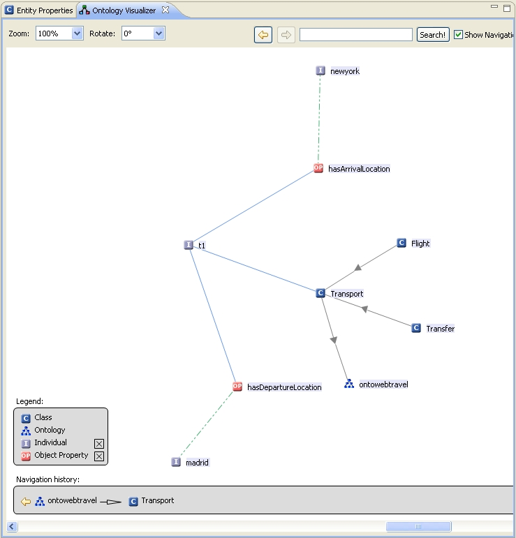

Ontology Visualizer
The Ontology Visualizer Panel displays the ontology and all elements of the hierarchy
(classes, individuals, object properties) as a graph.
You can open the view by selecting "Visualize Ontology" in the context menu of an ontology element or
a class element in the Ontology Navigator.

Functions:
- Display of classes, individuals and inheritance hierarchy by directed graphs
- Display of object properties, data properties and values by directed graphs
- Zoom function
- Rotation function
- Automatic layout for optimized view of the graph
How to use the visualizer?
- Left-clicking an element in the Ontology Visualizer will refresh the visualization rendering with
the currently selected element becoming its center.
- By right-clicking an element all of its connections will be added
to the current visualization without shifting the focus to this element.
- In case there are many instances or classes displayed, the visualizer gets quite cluttered, i.e.
you should avoid visualizing large ontologies with it.
- On the left side of the view a legend is displayed. Here you can activate or deactivate different ontology
entities by selecting the check boxes.
- You can also enlarge or reduce the view of the graph.
This can be achieved by changing the zoom value or by pressing Ctrl/+
to zoom in and Ctrl/- to zoom out.
- The context menu of the visualizer panel provides means for stopping and starting the layout engine, which helps
when you want to manually arrange the nodes on the screen.
- Also, in the context menu you can find the functionality to rotate the whole graph, which sometimes
improves the overall layout.
Graph elements:
Grey arrows:
Represent the connection between super and subclasses or between a class and its ontology.
Blue arrows:
Represent the connection between classes and their individuals, and between individuals and their properties.
Green arrows:
The values of object properties are connected to the object property via green links.